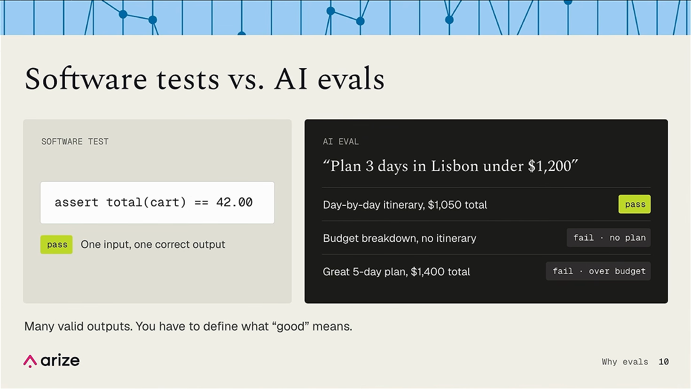
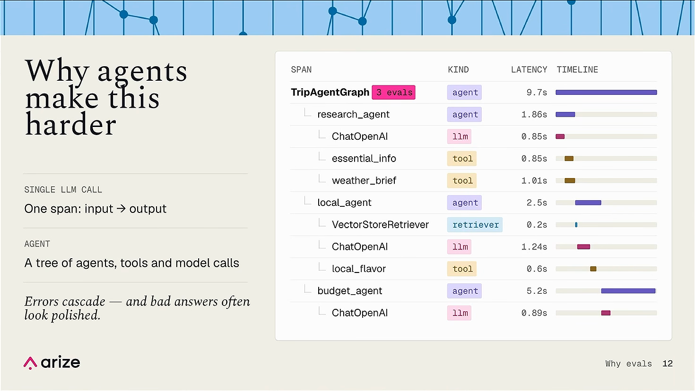
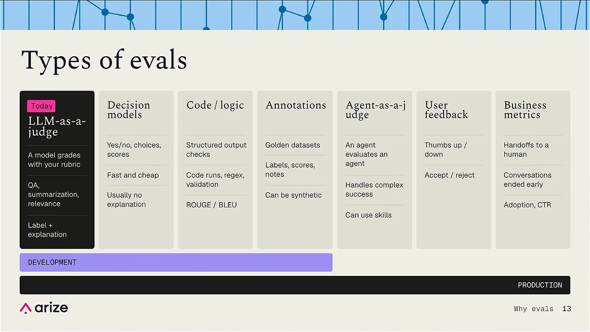
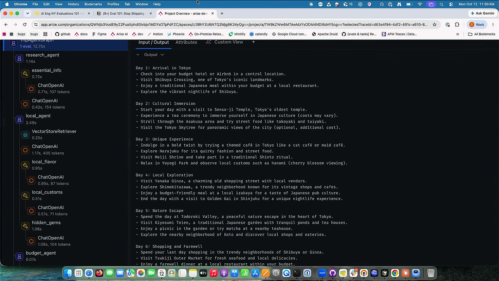
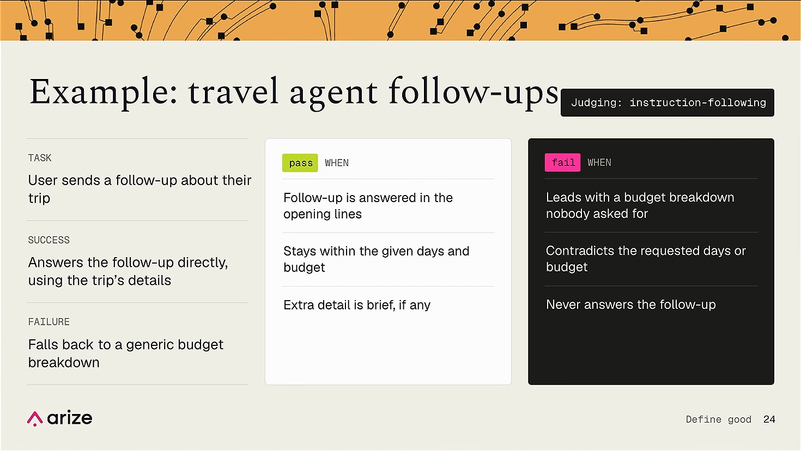
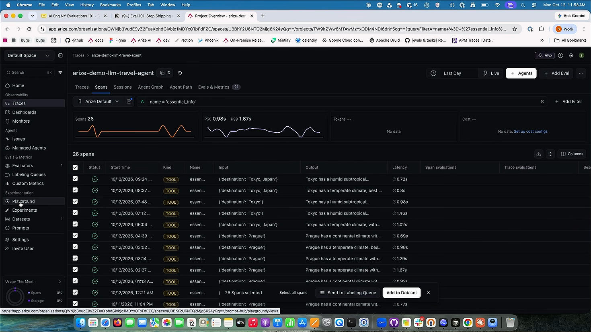

Коротко
Оценка «на глаз» не масштабируется
Без evals нельзя поймать регрессию после правки промпта, честно сравнить промпты и модели или поставить quality gate в CI.
У агента много правильных ответов
Unit-тест сверяет один вход с одним выходом. Логику агента в коде не прочитать: она проявляется только в трейсах.
Конкретные критерии, одно качество на eval
Вместо «полезный, точный ответ» пишем проверяемые условия. LLM-судья надёжнее работает с одним критерием за раз.
Трейсы → датасет → playground → evaluator
Отфильтровать нужные спаны, сохранить их в датасет, написать шаблон судьи, прогнать, читать объяснения и править промпт.
Почему проверки «на глаз» не работают
Главы «Why vibe checks don't scale», «Is an eval just a unit test?», «Why agents make evals harder»
DeLucia описывает «vibes problem» 02:06: команда меняет промпт, ответы кажутся лучше, и никто не может это доказать.
Правка в промпте, релиз. В целом стало лучше, но проверить нечем.
Ещё один релиз, ответы по-прежнему выглядят нормально.
Сценарий, который чинили, снова сломан.
Проблема растёт, а доказать, что исправлено или сломано, невозможно.
Без evals недоступны четыре вещи: поймать регрессию после изменения промпта, объективно сравнить промпты и версии моделей, понять, лучше ли новая модель именно для вашего сценария, и поставить формальный quality gate в CI перед выкаткой агента.
Eval — не unit-тест 03:08
В обычном тесте один вход и один правильный выход, а логику можно прочитать в коде. У агента логика проявляется уже после выполнения, в виде трейсов, а правильных ответов много. Поэтому оценка проверяет сразу несколько свойств: есть ли план по дням, укладывается ли бюджет и так далее.

assert total(cart) == 42.00: один вход, один правильный выход. Справа три ответа на запрос «Plan 3 days in Lisbon under $1,200»: план по дням на $1 050 проходит, разбивка бюджета без маршрута падает (no plan), отличный план на 5 дней за $1 400 тоже падает (over budget). Вывод слайда: правильных ответов много, поэтому «хорошо» нужно определить самому.
Формула, которую DeLucia повторяет на воркшопе: трейсы — это логи для AI, evals — настоящие тесты 04:01. Отсюда неприятное следствие: без трейсинга и observability писать evals не получится.
Почему с агентами сложнее 04:13
Один вызов LLM даёт один спан: вход и выход. Агент порождает дерево из под-агентов, инструментов и вызовов модели. Ошибки каскадом идут по дереву, а плохой итоговый ответ часто выглядит гладко. Один unit-тест такую конструкцию не покроет.

TripAgentGraph (9,7 с, на нём висят 3 evals) вызывает research_agent с LLM и инструментами essential_info и weather_brief, local_agent с VectorStoreRetriever и инструментом local_flavor, затем budget_agent. Колонка KIND показывает тип каждого спана (agent, llm, tool, retriever), таймлайн показывает, где уходит время. Подпись слева: «Errors cascade — and bad answers often look polished».
Какие бывают evals
Сегодня в фокусе LLM as a judge, но это лишь один из семи видов

LLM as a judge
Вторая LLM оценивает один аспект агента по вашей рубрике: QA, summarization, relevance. Возвращает метку и объяснение. Объяснение показывает, почему поставлена метка, и избавляет от необходимости верить ей на слово.
Decision models
Дешёвые и быстрые: вопрос на входе, вероятность и метку (true/false или класс) на выходе, обычно без объяснения. По словам DeLucia, OpenAI за неделю до воркшопа выпустила API для таких моделей 05:52, и она ждёт, что они займут большое место в evals.
Code / logic
Детерминированные проверки: есть ли слово в ответе, валиден ли JSON, регулярки, валидация структуры. Сюда же относятся ROUGE и BLEU.
Annotations
Golden datasets с эталонными метками, оценками и заметками. Бывают и синтетическими.
Agent as a judge
Появился примерно за последние полгода: полноценный агент, который может пользоваться skills, оценивает другого агента. Подходит для очень сложных критериев успеха.
User feedback
Лайк или дизлайк, принял пользователь ответ или отклонил.
Business metrics
Передача диалога человеку, разговоры, оборванные раньше времени, adoption, CTR.
Первые четыре вида работают на всём жизненном цикле, от разработки до продакшена. DeLucia считает это важным: evals должны расти вместе с продуктом, а не выбрасываться после этапа разработки.
Сначала посмотрите на данные
Подготовка воркшопа, travel-агент и чтение трейса
Практическая часть идёт в Arize AX. Участники заходят на app.arize.com 07:48, заводят бесплатный аккаунт и в Settings → AI Providers добавляют API-ключ любого провайдера: Anthropic, OpenAI, Gemini или собственный endpoint. Ключ стоит проверить кнопкой test integration. Демо-проект лежит в разделе Traces.
Сценарий: агент, планирующий поездки 10:16
Агент получает запрос на поездку и уточняющий вопрос пользователя, вызывает инструменты и возвращает план. В запросе есть направление, длительность, бюджет и стиль путешествия; пример со слайда: Marrakech на неделю, $1500, стиль authentic, вопрос «Explain what etiquette and local customs I need to know». В продуктовых терминах «хорошо» значит две вещи: агент отвечает на тот вопрос, который задал пользователь, и соблюдает число дней и бюджет.
В демо DeLucia открывает трейс про Прагу 11:30: 3 дня, бюджет $800, просьба о чём-то «более местном и менее туристическом». Задание для зала: пройтись по трейсам и ответить на три вопроса. О чём просит пользователь? Что сделал агент, какие инструменты вызвал и что ответил? Отправили бы вы такой ответ пользователю?
Как читать трейс 14:20
Трейс — это все шаги, которые агент сделал, чтобы ответить на вопрос. Наверху лежит root span; формально это спан с parent ID = null, перед ним ничего нет. Обычно в нём находятся вход и финальный ответ.
Каждый спан ниже — единица работы. Иконка показывает тип: agent, tool (сходить за внешними данными вроде погоды или достопримечательностей), LLM. В демо root span вызывает research_agent: это multi-agent-система, где несколько агентов выполняют разные задачи по поручению главного.
Вопрос из зала: почему подряд два LLM-спана 16:30? Первый вызов LLM выбрал инструмент, второй получил данные инструмента (температуру, сведения о направлении) и сжал их для следующих шагов. Иногда, чтобы понять шаг, приходится спуститься по дереву и вернуться наверх.

research_agent → essential_info и два вызова ChatOpenAI, local_agent с VectorStoreRetriever, инструменты local_flavor, local_customs, hidden_gems, дальше budget_agent. У каждого спана видно время и число токенов. Справа вкладка Input / Output корневого спана с маршрутом по Токио на шесть дней. Это материал, по которому потом пишут критерии.
Ещё два ответа из Q&A. Корневой узел не обязан принимать все решения: бывают архитектуры с supervisor- или orchestrator-агентом, который планирует работу под-агентов, а бывают модульные агенты без супервизора, как в демо. Arize не привязан к фреймворку: auto-instrumenters поставляются в пакете трейсинга OpenInference 18:25.
Определите, что значит «хорошо»
Первый шаг любого eval — конкретные критерии вместо оценочных слов
Людям трудно сформулировать успех, поэтому DeLucia предлагает простой приём 19:20: выписать, что значит «хорошо», и заменить каждое расплывчатое слово проверяемым условием.
- Helpful
- Accurate
- Good response
- Отвечает на уточняющий вопрос пользователя
- Совпадает с запрошенным числом дней
- Укладывает итоговую сумму в заявленный бюджет
Одно качество на один eval
По словам DeLucia, многие исследования показывают, что LLM as a judge хорошо справляется только с одним критерием за раз 19:57. Исключения — decision models и agent as a judge: им можно дать несколько критериев. На слайде это показано как ряд отдельных качеств: groundedness, actionability, tone, instruction-following. Выберите одно, остальные добавите позже.
Evals растут итерациями
Набор evals нельзя настроить один раз и забыть. Первая версия evals для Alyx, AI-агента внутри Arize, была простой: QA correctness, user frustration и проверки безопасности вроде jailbreak и toxicity. Сейчас на Alyx работают 32 evals 20:55. Новые появлялись по мере того, как реальные данные из продакшена показывали, чего ещё не хватает для определения успеха.
Что лучше, универсальный eval или специфичный 21:15? Специфичный под ваш сценарий обычно точнее, но любой eval лучше, чем никакого. В eval hub Arize есть готовые шаблоны (QA correctness, hallucination, session coherence), с них удобно стартовать, а затем подгонять под свой случай.
Критерии pass/fail
Шесть пунктов, из которых потом собирается промпт судьи
Участники в парах выписывают шесть вещей 22:10: задачу, на которой строится eval; как выглядит успех; как выглядит провал; что именно оценивает eval; три пункта для pass; три пункта для fail. Чем конкретнее, тем лучше получится судья.
- Task: пользователь задаёт уточняющий вопрос о поездке
- Success: отвечает на него напрямую, опираясь на детали поездки
- Failure: скатывается в типовую разбивку бюджета
- ответ на вопрос стоит в первых строках
- соблюдены заданные дни и бюджет
- лишние детали краткие или их нет
- начинает с разбивки бюджета, о которой не просили
- противоречит запрошенным дням или бюджету
- так и не отвечает на вопрос

Зачем пункты, если хватило бы одной строки 24:30? Из них пишется промпт для LLM as a judge, и модели нужна конкретика. DeLucia советует писать критерии так, будто объясняете коллеге или стейкхолдеру, как выглядит успех.
Датасет и LLM-судья в playground
Шесть шагов первой самостоятельной итерации
- Отфильтровать спаныВ Traces найти спаны, которые будете оценивать
- Выбрать релевантныеОтметить спаны, подходящие под критерии
- Сохранить в датасетAdd to Dataset → новый датасет
- Открыть PlaygroundНовый prompt playground
- Add evaluator → NewЗаписать критерии в шаблон
- Загрузить и запуститьДатасет, маппинг
{input}/{output}, run
Шаги перенесены со слайда «Lab: take a first pass» 27:25; имя eval там предлагают задавать как workshop-[name]-[quality].
Какие спаны брать 25:25
Всё зависит от того, что вы оцениваете. Сравнить запрос с итоговым маршрутом? Сохраняйте root spans, фильтр parent ID = null. Проверить, что инструмент вернул нужные данные? Берите спаны этого инструмента, фильтр по имени. Фильтры DeLucia называет лучшим способом найти нужные данные.

name = 'essential_info': 26 спанов типа TOOL, вход вроде {'destination': 'Prague'}, выход с описанием климата. Все 26 отмечены, внизу кнопки Send to Labeling Queue и Add to Dataset.
Шаблон судьи 27:35
В Arize два playground: prompt playground для промптов, в том числе eval-промптов, и agent playground для сквозного тестирования агента. Нужен первый. Готовый eval из eval hub добавляется из выпадающего списка; если начинаете с нуля, выбирайте blank eval и пишите шаблон из своих критериев. Многое просто вставляется из заметок.
Порядок частей шаблона у DeLucia:
- Роль и задача. Например: «You're evaluating whether an assistant's output actually accurately captures the details requested or provided in the input».
- Данные. Имена переменных можно не подгонять: variable mapping 29:25 связывает их с атрибутами трейса. Если в датасете поле называется иначе, меняется задача, а не каждый eval.
- Пункты pass и fail. Пример: correct, только если ответ согласуется со входом; incorrect при неверном направлении, типе жилья и т. п.
В параметрах задаются:
- Метки. Обычно correct/incorrect, но можно и больше: partially correct, not applicable. В Alyx ей важно видеть «частично верно».
- Optimization direction. Что считать хорошим результатом: метку correct или более низкий балл.
- Объяснения. Обоснование, почему судья поставил метку.
Дальше загружается датасет, входы и выходы сопоставляются с переменными, и судья запускается. В демо DeLucia берёт GPT-4.1 mini 31:10. Результаты появляются прямо в playground: читаете ответы судьи, отмечаете, где не согласны, правите промпт и запускаете снова. Готовый шаблон сохраняется кнопкой Save evaluator и становится доступен во всей платформе.
Слайд о главном моменте итерации 32:33: прочитайте вслух одно объяснение к провалу и спросите себя, ошибся судья или рубрика неясна.
Итерации с Alyx 32:12
После первой ручной итерации можно подключить Alyx, агента Arize: он сам запускает playground, смотрит результаты, правит промпт и повторяет цикл. Критерии при этом остаются за вами. Промпт со слайда:
Here's my instruction-following eval for the travel agent. Review it against the explanations on my dataset. Where is the rubric vague or the judge disagreeing with me? Suggest one change and re-run it.
Что делать после первого судьи
Остальная часть цикла: выравнивание, онлайн-оценка, мониторинг
На воркшопе разобрали второй шаг цикла: инструментацию и написание eval. Дальше, по словам DeLucia, хорошие команды делают три вещи 33:07.
Alignment. Разметить примеры из датасета вручную, прогнать судью и проверить, совпадает ли он с людьми. Повторять, пока не начнёт совпадать.
Online evals. Поставить судью на продакшен-трафик: каждый новый трейс автоматически оценивается всеми вашими evals. Слайд уточняет: начните с выборки, не оценивайте 100% трафика в первый же день.
Monitor. Следить за долей pass и получать алерт при её падении.
Результаты evals становятся сигналом для управляемых агентов Arize. Один из них, Signal 32:50, смотрит трейсы, находит проблемы и даже вносит исправления.
Два тезиса под конец
Агента оценивают все стейкхолдеры 33:40. Соберите в одной комнате продукт, разработку, поддержку, экспертов и безопасность, и пусть каждый опишет успех через свои результаты.
Метрика и eval нужны вместе 34:05: метрика сообщает, что что-то может быть сломано, а eval показывает, как именно агент ошибается. Ещё один эксперимент на будущее: переписать вопрос LLM-судьи для decision judge и сравнить, кто справится лучше.
С чего начать
- Включите трейсинг агента: без трейсов оценивать нечего.
- Откройте один-два трейса и ответьте на три вопроса: что просил пользователь, что сделал агент, отправили бы вы такой ответ.
- Выберите одно качество и опишите его как task, success, failure и по три пункта pass и fail.
- Соберите около 20 трейсов в датасет, отфильтровав нужные спаны.
- Напишите одного судью, прогоните его, прочитайте объяснения и правьте рубрику, пока не согласитесь с ним.
- Только потом добавляйте новые evals, alignment по ручной разметке и онлайн-оценку на выборке трафика.
Совет DeLucia в финале 34:28: начните с малого, примерно 20 трейсов, одно измерение, один судья.
Таймлайн
Главы автора и ключевые моменты; миниатюры открываются крупно
Почему агенты усложняют задачу
Дерево агентов, инструментов и вызовов модели вместо одного спана.
Типы evals
LLM as a judge, decision models, код, аннотации, agent as a judge, фидбек, бизнес-метрики.
Судья в prompt playground
Фильтр по essential_info, затем шаблон, метки, GPT-4.1 mini, Save evaluator.
Цитаты
“Traces are the logs for AI. Evals are actual tests.”Трейсы — логи для AI, evals — настоящие тесты.
“An eval is better than no eval at all.”Любой eval лучше, чем никакого.
“Every stakeholder evaluates the agent. This is not just one kind of role's job.”Агента оценивает каждый стейкхолдер, а не одна роль.
“A metric tells you that something might be broken, but evals tell you what the actual failure mode is.”Метрика говорит, что что-то может быть сломано, а eval показывает, как именно агент ошибается.